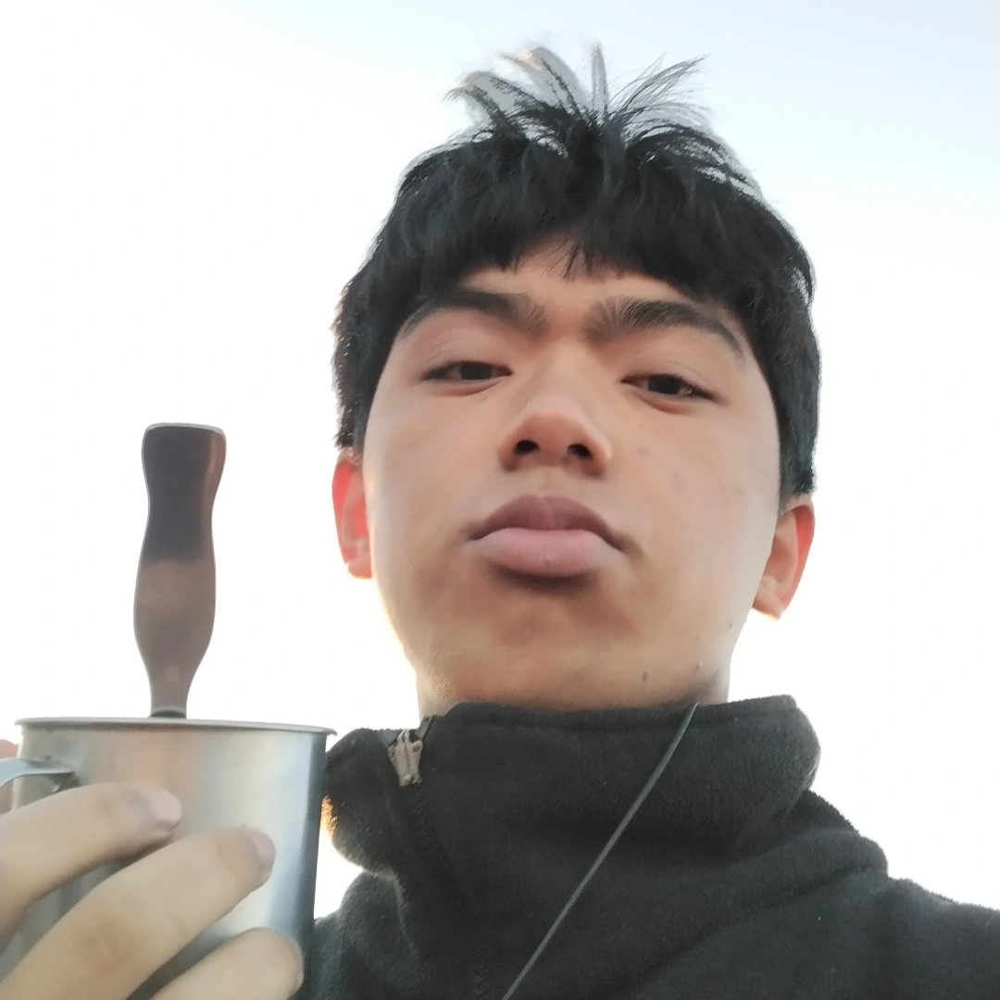

Mount Yangbew
The very first peak I climbed. I remember being too tired to think straight.

About Me
Hey, I’m Hans.
I’m a student currently studying Computer Science at the University of Baguio. I enjoy reading, exploring, photography, listening to music, and doing triathlons. I also love nature and care a lot about protecting it.
From Ilocos, Bulacan, and Valenzuela City. But Baguio is my home, my soul.
Climbros was originally just a thought of me compiling my journey. But now it has become a reality.
The inspiration for this fragmentation of my trips is my best friend Ali. She was the one that inspired me. We shared a lot of first experiences. Enjoy the site.
The very first peak I climbed. I remember being too tired to think straight.

Sunrises have a symbolic meaning for me. For me they represent the beginning and the end. That time and life are fleeting. So we must enjoy every moment.

One of the more harder climbs. The terrain was very rocky here. But the view from the horizon was ethereal.

The place where King Arthur got Excalibur. This is my hardest journey up to date. A week of hiking and trekking. The bodies of water were beautiful. The mountains were peak.

I bought a lot of supplies for Black Mountain as it was one of the longest journeys you can take up in Wales. Remember, always be prepared.

Hearty meals are important. After a long hike eating something good is so filling. I had mashed potatoes with sausage. The best.
Local peaks, cool air, and the places that made the Climbros story feel close to home.

Philippines
Local peaks, quiet skies, and the start of the Climbros journey.

Philippines
Highest point of Baguio.

Philippines
Terrace of heaven.

Philippines
Terrace of heaven.

Philippines
Terrace of heaven.
A separate set of memories, shown the same way for a clean and consistent look.

Japan
Cold mountain.

Japan
The slower moments are what make a trip feel real.

Japan
Another place, another mood, same Climbros story.

Japan
Fast movement, open air, and a different kind of journey.

Japan
A deep forest moment with a heavier atmosphere.

Japan
My love, mine, all mine.
The harder climbs, colder air, and the kind of mountain memories that stay with you.

Wales
Horizons.

Wales
A week of hiking, trekking, and mountain views that hit hard.

Wales
A week of hiking, trekking, and mountain views that hit hard.

Scotland
Supplies, layers, and the reminder that good climbs need planning. Rocky, demanding, and worth every step of the horizon.
If you want to reach out, head over to the contact page and send a message.
I’m Ready